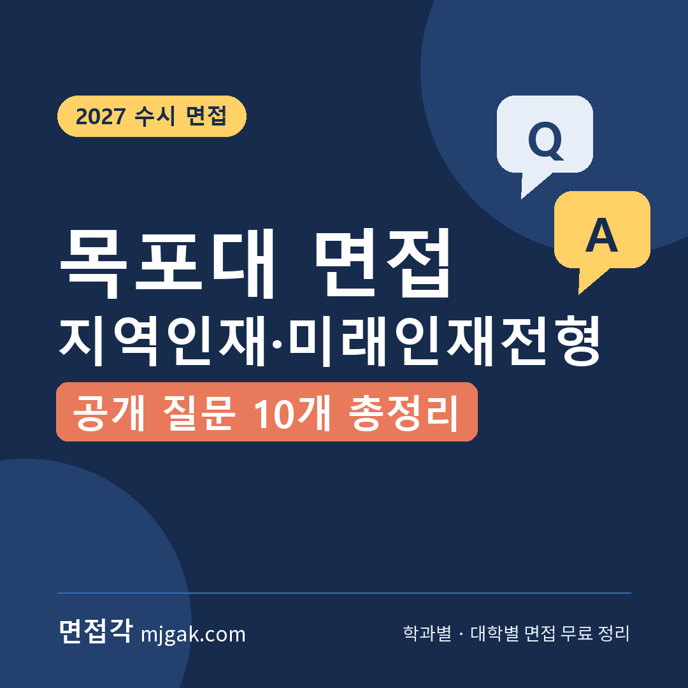
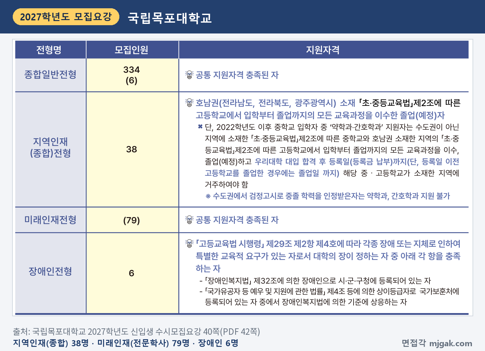
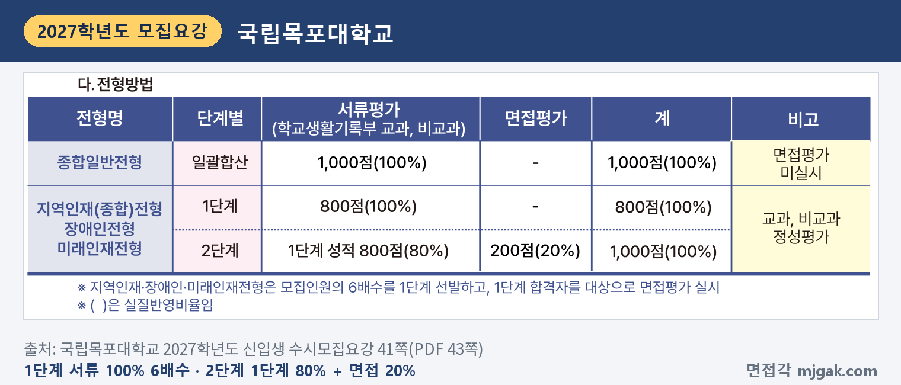
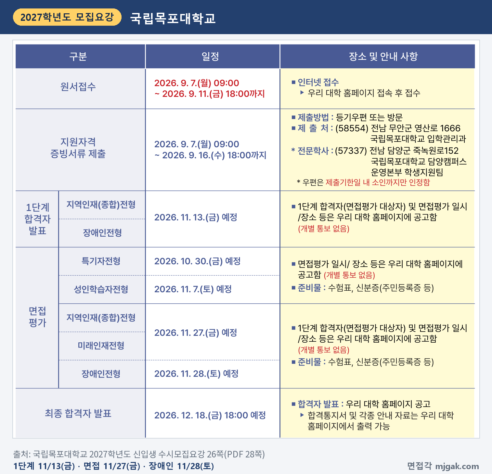
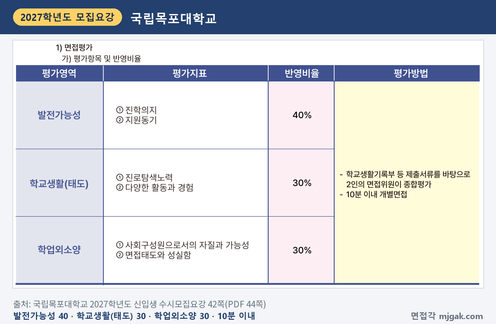
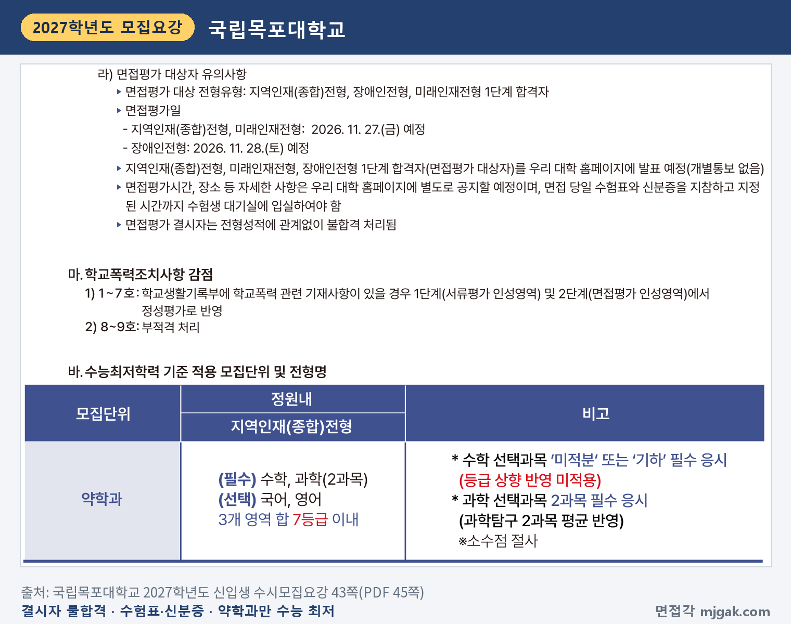
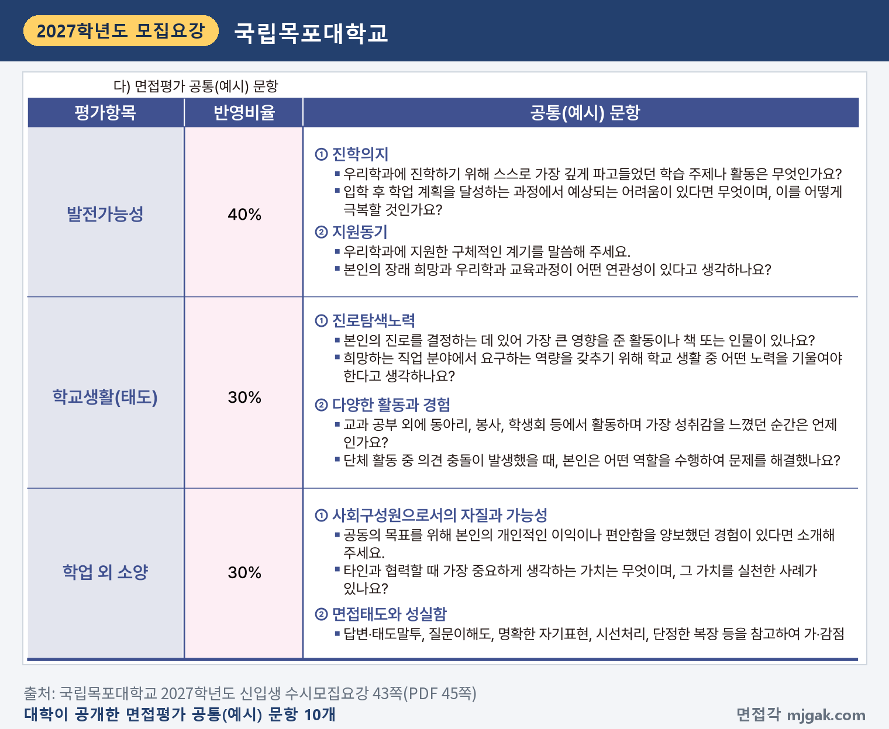
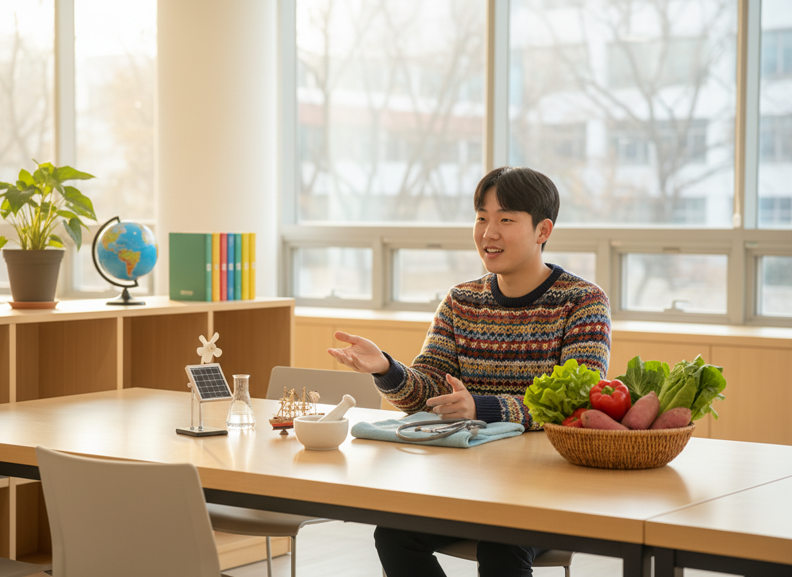
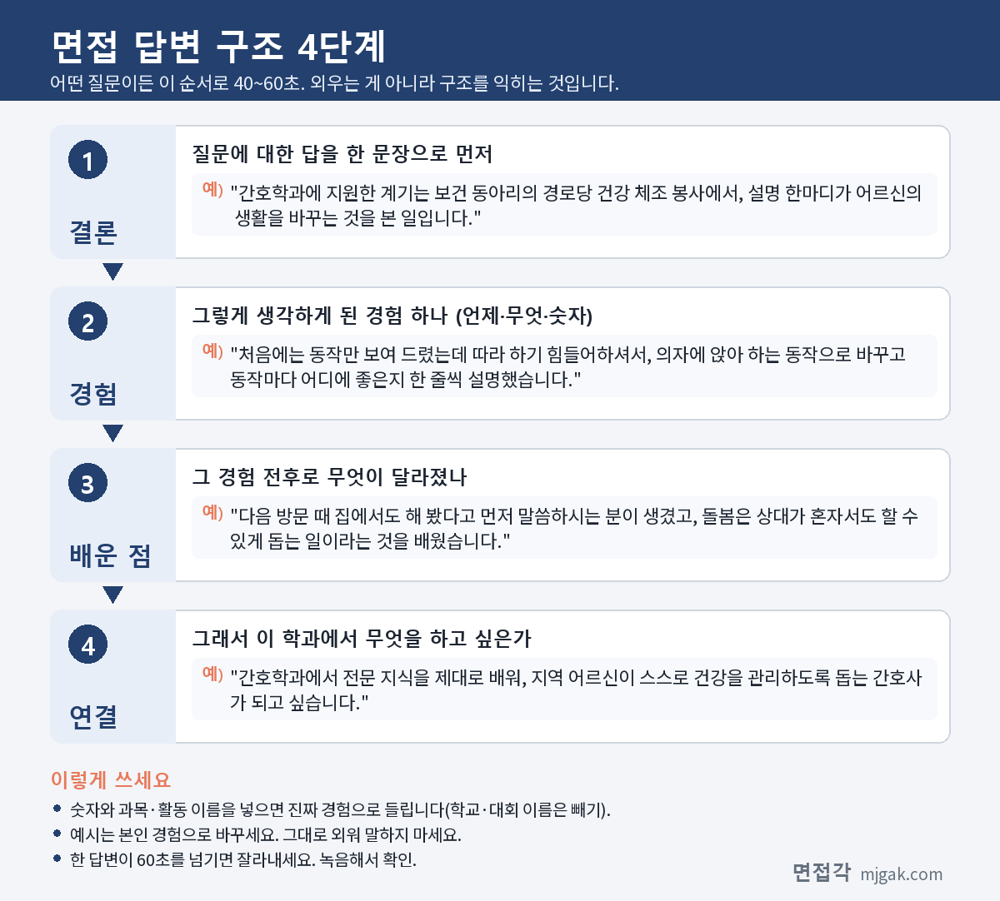
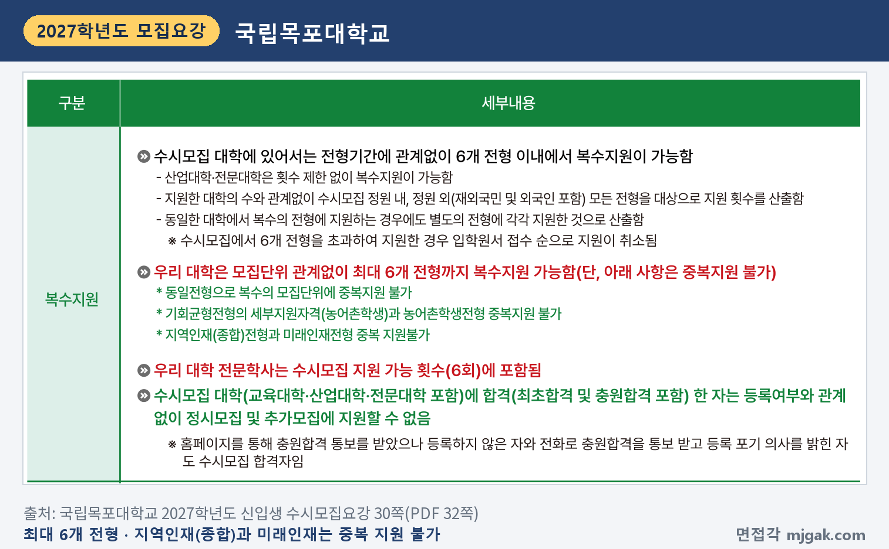

Ctrl+V (서식 유지됨)제목
본문 (이 영역 전체가 복사됩니다)
📷 여기에 이미지 넣기 — 썸네일 — thumb-mokpo.png (대표 이미지로 지정)
국립목포대학교는 학생부종합전형 면접에서 물을 공통(예시) 문항 10개를 모집요강에 그대로 공개했습니다. 그래서 목포대 면접 준비의 출발점은 이 10개에 내 학생부로 답을 하나씩 만들어 두는 것입니다. 지역인재(종합)전형과 미래인재전형은 1단계 서류평가 100%로 모집인원의 6배수를 뽑고, 2단계에서 1단계 성적 80%와 면접 20%를 합산합니다. 1단계 합격자 발표는 11월 13일(금) 18:00 예정, 수능은 11월 19일(목), 면접은 11월 27일(금)입니다. 이 글은 국립목포대학교 2027학년도 신입생 수시모집요강을 바탕으로 두 전형의 모집인원과 전형 방법, 일정, 면접 방식, 공개 질문 10개의 답변법, 준비 순서를 정리하고, 장애인·성인학습자·특기자전형은 한 구역으로 묶었습니다. 지역인재(종합)전형(약학과·간호학과·사범대 학과)과 미래인재전형(전문학사) 지원자가 읽으시면 됩니다.
1. 지역인재(종합)·미래인재전형, 2027학년도에는 어떻게 보나
지역인재(종합)전형은 38명을 뽑습니다. 영어교육과 8명, 간호학과 6명, 환경교육과 6명, 교육학과 5명, 윤리교육과 5명, 수학교육과 4명, 약학과 4명입니다(27·28쪽). 지원자격은 호남권(전라남도, 전라북도, 광주광역시) 고등학교에서 입학부터 졸업까지 모든 교육과정을 이수한 졸업(예정)자입니다. 2022학년도 이후 중학교 입학자 중 약학과·간호학과 지원자는 수도권이 아닌 지역의 중학교도 이수해야 하고, 합격 후 등록일까지(등록일 전에 고등학교를 졸업했다면 졸업일까지) 해당 중·고등학교가 있는 지역에 거주해야 합니다(40쪽).
미래인재전형은 담양캠퍼스 전문학사 과정에서 79명을 뽑습니다. 스마트조선해양·에너지학부 40명, 농수산식품학부 39명이고(28쪽), 지원자격은 고등학교 졸업(예정) 또는 동등 학력입니다(40쪽).
📷 여기에 이미지 넣기 — 캡처 1 — 국립목포대학교 2027학년도 신입생 수시모집요강 40쪽: mokpo-2027-units.png
두 전형 모두 1단계에서 서류평가(학교생활기록부 교과, 비교과) 100%(800점)로 모집인원의 6배수를 뽑고, 2단계에서 1단계 성적 800점(80%)과 면접평가 200점(20%)을 합산합니다(41쪽). 이 글에서 계산하면 1단계 합격 규모는 약학과 24명, 간호학과 36명, 영어교육과 48명, 스마트조선해양·에너지학부 240명입니다.
📷 여기에 이미지 넣기 — 캡처 2 — 국립목포대학교 2027학년도 신입생 수시모집요강 41쪽: mokpo-2027-method.png
서류평가는 학업역량 40%, 학교생활(태도) 40%, 학업외소양 20%를 입학사정관이 정성평가하고, 교외실적·인적사항·고교정보 같은 학교생활기록부 기재 금지사항은 평가에 반영하지 않습니다(41쪽). 수능 최저는 지역인재(종합) 약학과에만 있습니다(43쪽). 최종 동점자는 면접 총점, 면접의 발전가능성·학교생활(태도)·학업 외 소양 영역 점수 순으로 가리고, 그래도 같으면 1단계 기준을 적용합니다(56쪽). 학교폭력 조치사항 1~7호는 서류와 면접의 인성영역에서 정성평가로 반영하고, 8~9호는 부적격입니다(43쪽).
2. 언제 보나: 1단계 발표 14일 뒤, 수능 8일 뒤 면접
- 11월 13일(금) 18:00 예정: 1단계 합격자(면접평가 대상자) 발표, 대학 홈페이지(개별 통보 없음) (57쪽)
- 11월 19일(목): 수능
- 11월 27일(금): 지역인재(종합)·미래인재 면접 (26·43쪽)
- 12월 18일(금) 18:00 예정: 최종 합격자 발표 (26쪽)
- 12월 21일(월) ~ 23일(수) 16:00: 합격자 온라인 등록 (26쪽)
1단계 발표에서 면접까지 14일, 수능에서 면접까지 8일입니다(이 글에서 계산한 값). 면접 시간과 장소는 대학 홈페이지에 따로 공지합니다(43쪽). 최종 합격자 발표일은 57쪽에 12월 11일(금)로도 적혀 있어 쪽마다 다릅니다. 26쪽 일정표와 입학처 전형 일정 공지는 12월 18일이니, 발표 전 입학처 공지를 다시 확인하세요.
📷 여기에 이미지 넣기 — 캡처 3 — 국립목포대학교 2027학년도 신입생 수시모집요강 26쪽: mokpo-2027-schedule.png
3. 면접은 어떻게 보나
면접은 학교생활기록부 등 제출서류를 바탕으로 2인의 면접위원이 종합평가하는 10분 이내 개별면접입니다(42쪽). 평가영역은 세 가지입니다.
- 발전가능성 40%: 진학의지, 지원동기
- 학교생활(태도) 30%: 진로탐색노력, 다양한 활동과 경험
- 학업외소양 30%: 사회구성원으로서의 자질과 가능성, 면접태도와 성실함
영역마다 S·A·B·C·F 5등급으로 매기고, 발전가능성은 80·64·48·32·0점, 나머지 두 영역은 60·48·36·24·0점입니다(42쪽).
📷 여기에 이미지 넣기 — 캡처 4 — 국립목포대학교 2027학년도 신입생 수시모집요강 42쪽: mokpo-2027-interview.png
면접 당일에는 수험표와 신분증을 지참하고 지정된 시간까지 수험생 대기실에 들어가야 합니다. 면접평가 결시자는 전형성적과 관계없이 불합격입니다(43쪽). 블라인드 면접 여부는 모집요강에 적혀 있지 않습니다.
📷 여기에 이미지 넣기 — 캡처 5 — 국립목포대학교 2027학년도 신입생 수시모집요강 43쪽: mokpo-2027-notice.png
4. 대학이 공개한 면접 질문 10개와 답변법
목포대는 면접평가 공통(예시) 문항 10개를 면접태도와 성실함을 뺀 5개 평가지표에 2개씩 공개했습니다(43쪽). 아래 따옴표 안 질문은 모집요강 원문 그대로입니다. 답변 예시는 학과를 바꿔 쓴 가상의 예시이니 본인 학생부 경험으로 바꾸세요. 공통 원칙은 하나입니다. 첫 문장에서 묻는 것에 답하고, 학생부에 있는 장면 하나로 뒷받침합니다.
📷 여기에 이미지 넣기 — 캡처 6 — 국립목포대학교 2027학년도 신입생 수시모집요강 43쪽: mokpo-2027-questions.png
▶ 질문 1·2. 진학의지 (발전가능성)
"우리학과에 진학하기 위해 스스로 가장 깊게 파고들었던 학습 주제나 활동은 무엇인가요?"
"입학 후 학업 계획을 달성하는 과정에서 예상되는 어려움이 있다면 무엇이며, 이를 어떻게 극복할 것인가요?"
왜 묻나: 평가지표 '진학의지'의 공개 문항입니다. 질문 1은 '스스로', '가장 깊게'라는 말이 핵심이라, 수업에서 시작해 혼자 더 해 본 과정을 말해야 합니다.
답변 구조: 주제 한 문장 → 궁금해진 계기 → 스스로 해 본 방법 → 알게 된 것 → 학과에서 이어 갈 공부.
답변 예시 (약학과, 질문 1):
"가장 깊게 파고든 주제는 화학 시간에 배운 중화 반응입니다. 위산을 줄이는 약이 어떻게 작용하는지 궁금해서, 식초에 달걀 껍데기 가루를 넣는 양을 바꿔 가며 pH를 재 봤습니다. 가루를 늘릴수록 pH가 오르는 폭이 점점 작아져, 양과 효과가 단순히 비례하지 않는다는 것을 알았습니다. 약학과에서 약이 몸속에서 어떻게 작용하는지 제대로 배우고 싶습니다."
주의: 질문 2에 "어려움은 없습니다"라고 답하지 마세요. 실제로 걱정되는 점 하나와, 학생부에서 비슷한 어려움을 넘긴 방법을 이어서 말하세요.
▶ 질문 3·4. 지원동기 (발전가능성)
"우리학과에 지원한 구체적인 계기를 말씀해 주세요."
"본인의 장래 희망과 우리학과 교육과정이 어떤 연관성이 있다고 생각하나요?"
왜 묻나: 평가지표 '지원동기'의 공개 문항입니다. 질문 3은 '구체적인 계기'를, 질문 4는 내 장래 희망과 학과 교육과정의 연관성을 묻습니다.
답변 구조: 계기 한 문장 → 그 장면 → 그때 바꾼 것과 결과 → 학과에서 배울 것.
답변 예시 (간호학과, 질문 3):
"간호학과에 지원한 계기는 보건 동아리의 경로당 건강 체조 봉사에서, 설명 한마디가 어르신의 생활을 바꾸는 것을 본 일입니다. 처음에는 동작만 보여 드렸는데 따라 하기 힘들어하셔서, 의자에 앉아 하는 동작으로 바꾸고 동작마다 어디에 좋은지 한 줄씩 설명했습니다. 다음 방문 때 집에서도 해 봤다고 먼저 말씀하시는 분이 생겼고, 돌봄은 상대가 혼자서도 할 수 있게 돕는 일이라는 것을 배웠습니다. 간호학과에서 전문 지식을 제대로 배워, 지역 어르신이 스스로 건강을 관리하도록 돕는 간호사가 되고 싶습니다."
주의: 질문 4는 지원 학과 홈페이지의 교육과정표에서 과목 두 개를 골라 내 장래 희망과 잇는 연습을 하세요. 직접 확인하지 않은 과목 이름은 말하지 않습니다.
▶ 질문 5·6. 진로탐색노력 (학교생활(태도))
"본인의 진로를 결정하는 데 있어 가장 큰 영향을 준 활동이나 책 또는 인물이 있나요?"
"희망하는 직업 분야에서 요구하는 역량을 갖추기 위해 학교 생활 중 어떤 노력을 기울여야 한다고 생각하나요?"
왜 묻나: 평가지표 '진로탐색노력'의 공개 문항입니다. 영향을 받은 데서 끝나지 않고, 그 뒤 내가 실제로 한 일을 말해야 '노력'이 됩니다.
답변 구조: 영향을 준 것 하나 → 그때 든 생각 → 그 뒤 해 본 일 → 지원 학과와 연결.
답변 예시 (스마트조선해양·에너지학부, 질문 5):
"진로를 정하는 데 가장 큰 영향을 준 것은 2학년 과학 동아리에서 만든 태양광 휴대폰 충전기입니다. 흐린 날에는 충전이 멈춰서, 패널 각도를 바꿔 가며 하루 세 번씩 전압을 기록했습니다. 각도만 바꿔도 충전되는 양이 크게 달라지는 것을 보고, 설비를 제대로 설치하고 관리하는 기술자가 꼭 필요하다는 것을 알았습니다. 그래서 전기 설비를 직접 다루는 법을 배우고 싶어 이 학부에 지원했습니다."
주의: 책을 말한다면 줄거리보다 읽고 나서 바꾼 행동을 말하세요. 질문 6은 희망 직업의 역량 하나를 정하고, 이미 한 노력과 남은 노력을 하나씩 말하면 됩니다.
📷 여기에 이미지 넣기 — 이미지 1 — 제미나이 생성: 늦가을 햇살이 드는 캠퍼스 라운지에서 약 막자사발·청진기·작은 배 모형·태양광 패널 키트·채소 바구니·지구본 옆에서 답하는 남학생(실사) / "제미나이 프롬프트 1" · gem-mokpo-1.png
(AI로 만든 이미지로, 실제 캠퍼스와 다를 수 있습니다)
▶ 질문 7·8. 다양한 활동과 경험 (학교생활(태도))
"교과 공부 외에 동아리, 봉사, 학생회 등에서 활동하며 가장 성취감을 느꼈던 순간은 언제인가요?"
"단체 활동 중 의견 충돌이 발생했을 때, 본인은 어떤 역할을 수행하여 문제를 해결했나요?"
왜 묻나: 평가지표 '다양한 활동과 경험'의 공개 문항입니다. 질문 7은 성취감을 느낀 '순간'을 묻습니다. 그 순간에 내가 맡은 일을 함께 말하면 장면이 분명해집니다.
답변 구조: 순간 한 문장 → 맡은 일 → 막혔던 점과 바꾼 방법 → 결과 → 배운 점.
답변 예시 (농수산식품학부, 질문 7):
"가장 성취감을 느낀 순간은 텃밭 동아리에서 기른 상추를 학교 축제 때 팔아 수익금을 기부했을 때입니다. 저는 물 주기 당번표를 맡았는데, 여름에 모종이 절반 넘게 시들어 물 주는 시간을 한낮에서 아침 일찍으로 바꾸고 그늘막을 쳤습니다. 그 뒤로 상추가 다시 자라 축제 날 준비한 양을 모두 팔았습니다. 작물은 정성보다 시간과 환경을 맞추는 것이 먼저라는 것을 배웠습니다."
주의: 질문 8은 누가 옳았는지보다 내가 한 행동과 정한 방법을 말하세요.
▶ 질문 9·10. 사회구성원으로서의 자질과 가능성 (학업외소양)
"공동의 목표를 위해 본인의 개인적인 이익이나 편안함을 양보했던 경험이 있다면 소개해 주세요."
"타인과 협력할 때 가장 중요하게 생각하는 가치는 무엇이며, 그 가치를 실천한 사례가 있나요?"
왜 묻나: 평가지표 '사회구성원으로서의 자질과 가능성'의 공개 문항입니다. 무엇을 양보했고 그 결과 공동체가 어떻게 달라졌는지를 말해야 합니다.
답변 구조: 공동의 목표 → 내가 양보한 것 → 결과 → 그 경험으로 바뀐 생각.
답변 예시 (환경교육과, 질문 9):
"2학년 때 학급 분리배출이 잘 안 돼 청소 시간이 길어지자, 제 점심시간 15분을 한 달 동안 재활용함 정리에 썼습니다. 잘못 버린 것은 사진으로 찍어 학급 단체방에 올리고 바르게 버리는 방법을 한 줄씩 적었습니다. 한 달 뒤에는 친구들이 먼저 페트병 라벨을 떼어 버리게 됐습니다. 시간을 양보한 것보다, 사람들이 스스로 바꾸게 돕는 과정이 교육이라는 것을 배웠습니다."
주의: 질문 10은 가치를 하나만 정하고(예: 맡은 일 끝까지 하기) 그 가치를 지킨 장면을 붙이세요.
마지막 지표 '면접태도와 성실함'은 질문 없이 "답변·태도말투, 질문이해도, 명확한 자기표현, 시선처리, 단정한 복장 등을 참고하여 가·감점"합니다(43쪽). 질문을 끝까지 듣고, 묻는 것에 첫 문장으로 답하세요.
5. 답변은 이 4단계로 만드세요
어떤 질문이든 결론 → 경험 → 배운 점 → 연결 순서로 40~60초 안에 말하세요. 면접이 10분 이내이니 답 하나가 1분을 넘지 않게 연습합니다. 아래 도식은 질문 3을 4단계로 쪼갠 것입니다.
📷 여기에 이미지 넣기 — 도식 — structure-mokpo.png
6. 장애인·성인학습자·특기자전형은 이렇게 다릅니다
장애인전형(정원 외 6명)은 표시된 모집단위에서 모집단위별 최대 1명을 뽑고(28쪽), 전형 방법과 면접 방식은 지역인재(종합)와 같으며 면접은 11월 28일(토)입니다(41~43쪽). 성인학습자전형(미래설계융합학부 40명)은 재직자(자영업자 포함), 취업예정자, 2027년 3월 1일 기준 만 25세 이상 중 하나에 해당하면 지원하고, 면접평가 100%(1,000점)로 뽑으며 면접은 11월 7일(토)입니다(26·28·50·51쪽). 특기자전형(체육학과·예술크리에이티브학부 25명)은 학생부 교과 300점, 출석 100점, 입상실적 500점, 면접 100점을 합산했고 면접일은 10월 30일(금)이었습니다(26~28·45쪽). 세 전형도 면접 방식과 공통(예시) 문항 10개가 같습니다(42·43·47·48·52·53쪽). 면접 시간과 장소는 홈페이지에 공지됩니다(26쪽).
7. 10월 31일(토)부터 면접 당일까지 준비 순서
10월 31일(토) ~ 11월 12일(목): 학생부를 처음부터 읽고 수업 장면 두 개, 활동 세 개를 골라 "왜 시작했나, 내가 한 일, 막힌 점, 다음에 한 일"을 한 줄씩 적습니다. 공개 질문 10개의 초안을 씁니다.
11월 13일(금) 18:00 예정, 1단계 발표: 대학 홈페이지에서 직접 확인합니다. 개별 통보는 없습니다(57쪽).
11월 14일(토) ~ 18일(수): 수능 공부가 먼저입니다. 하루 10분, 질문 3과 질문 1만 소리 내어 말해 봅니다.
11월 19일(목): 수능.
11월 20일(금) ~ 24일(화): 10분을 재며 모의 면접을 녹음하고, 60초를 넘는 답을 표시합니다. 질문 4는 학과 교육과정표를 보고 다시 씁니다.
11월 25일(수) ~ 26일(목): 홈페이지에서 면접 시간과 장소를 확인하고, 표시한 답을 줄입니다. 새 답변은 만들지 않습니다.
11월 27일(금), 면접: 수험표와 신분증을 챙기고 지정된 시간까지 대기실에 들어갑니다(43쪽).
12월 18일(금) 18:00 예정: 최종 합격자 발표. 합격했다면 12월 21일(월) ~ 23일(수) 16:00 온라인 등록을 놓치지 마세요(26쪽).
8. 목포대 지역인재(종합) 면접 자주 묻는 것들
Q. 지역인재(종합)와 미래인재에 같이 지원할 수 있나요?
A. 안 됩니다. 최대 6개 전형까지 복수지원이 가능하지만 지역인재(종합)전형과 미래인재전형은 중복 지원이 불가하고, 같은 전형으로 여러 모집단위에 지원할 수도 없습니다. 전문학사도 수시 6회에 포함됩니다(30쪽).
📷 여기에 이미지 넣기 — 캡처 7 — 국립목포대학교 2027학년도 신입생 수시모집요강 30쪽: mokpo-2027-multi.png
Q. 공개 질문 말고 다른 질문도 나오나요?
A. 모집요강은 10개를 '공통(예시) 문항'이라고 적었고, 면접은 학교생활기록부 등 제출서류를 바탕으로 합니다(42·43쪽). 내 학생부 활동을 짚는 질문에도 답할 수 있게 준비하세요.
Q. 수능 최저가 있나요?
A. 지역인재(종합) 약학과만 있습니다. 수학, 과학(2과목)은 필수이고 국어, 영어 중 하나를 더해 3개 영역 합 7등급 이내입니다. 수학은 미적분 또는 기하, 과학탐구는 2과목 평균(소수점 절사)입니다(43쪽). 간호학과와 미래인재전형은 없습니다.
Q. 면접 복장 규정이 있나요?
A. 면접평가 대상자 유의사항에는 복장 규정이 없습니다(43쪽). 다만 '면접태도와 성실함' 지표에서 "단정한 복장 등을 참고하여 가·감점"한다고 적혀 있습니다(43쪽).
Q. 면접에 못 가면 어떻게 되나요?
A. 면접평가 결시자는 전형성적과 관계없이 불합격 처리됩니다(43쪽).
9. 면접 전날 체크리스트
□ 공개 질문 10개에 내 학생부로 답을 하나씩 만들었다
□ 지원 계기를 학생부 장면 하나와 함께 60초 안에 말할 수 있다
□ 지원 학과 교육과정에서 내 장래 희망과 이어지는 과목 두 개를 말할 수 있다
□ 학생부 활동 세 개를 "내가 한 일, 막힌 점, 다음에 한 일"로 말할 수 있다
□ 녹음으로 60초를 넘는 답을 줄였다
□ 홈페이지에 공지된 면접 시간과 장소를 확인했다
□ 수험표와 신분증을 챙겼다
10. 같은 시기에 면접 보는 대학
목포대와 같이 지원했다면 이어서 보세요.
▷ 강원대 미래인재면접전형 면접 총정리 (11월 27일)
▷ 전북대 큰사람전형 면접 총정리 (11월 26일, 지역인재 11월 28일)
▷ 전남대 고교생활우수자Ⅰ 면접 총정리 (12월 2일)
11. 함께 보면 좋은 글
목포대 학생부종합 면접은 대학이 미리 알려 준 10개 질문에, 내 학생부의 장면으로 10분 안에 분명하게 답하는 자리입니다.
※ 이 글의 내용은 국립목포대학교 2027학년도 신입생 수시모집요강에서 인용했습니다. 괄호 안 쪽수는 모집요강에 인쇄된 쪽수입니다. 질문 10개는 모집요강에 공개된 공통(예시) 문항이고, 답변 예시는 가상의 예시입니다. 면접 시간과 장소는 국립목포대 입학처 홈페이지 공지를 꼭 확인하세요.
목포대를 포함한 76개 대학의 2027학년도 면접 정보와 71개 학과별 면접 질문·답변 예시, 대학이 공개한 실제 면접 기출을 무료로 정리한 사이트입니다. 회원가입 없이 바로 볼 수 있고, 질문을 무작위로 뽑아 60초 타이머로 연습하는 모의 면접도 있습니다.
태그 (#은 에디터가 자동으로 붙이므로 그대로 붙여 넣어도 됩니다)
넣을 이미지 목록 (docs/promo/img 폴더)










제미나이 프롬프트 1 — 늦가을 햇살이 드는 캠퍼스 라운지에서 약 막자사발·청진기·작은 배 모형·태양광 패널 키트·채소 바구니·지구본 옆에서 답하는 남학생(실사) (4:3) — 제미나이에 그대로 붙여 넣어 이미지를 만드세요